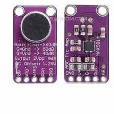
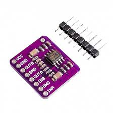

Components Used
Arduino Uno

Controls the system and processes input signals.
MAX9814 Microphone

Captures environmental audio with automatic gain control.
LM4861 Amplifier

Amplifies the processed audio signal.
TDA1308 Amplifier

Enhances output signal for earphones.